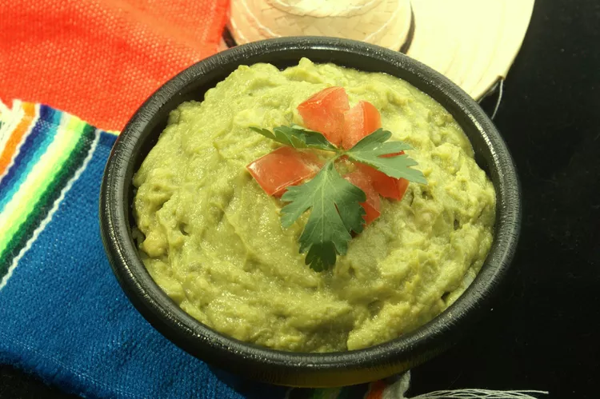

Freezer-Friendly Guacamole

Guacamole anytime
Avocado freezes quite well when pureed with a bit of lemon or lime juice. But, why not take it one step further and freeze premade guacamole so you have your favorite dip available at a moment's notice?
Try this recipe and you'll never be short on that green goodness!
Ingredients
- 2 avocados
- 1/2 lemon, juiced
- 2 tablespoons chopped onion
- 2 tablespoons olive oil
- 1/2 teaspoon salt
Steps
- Cut avocados into halves. Remove seeds and scoop out the pulp into a small bowl.
- Use a fork to mash the avocado
- Stir in lemon juice, onion, olive oil, and salt. Cover the bowl and refrigerate for 1 hour before serving.